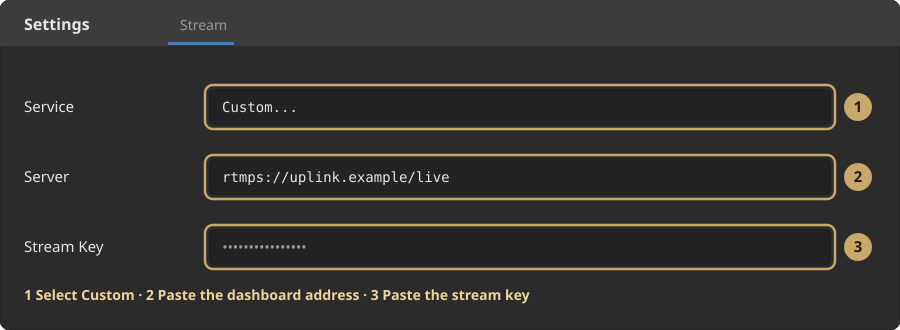
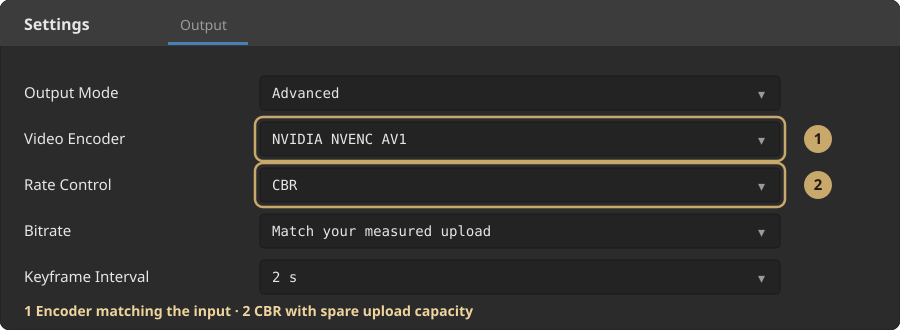

Set up OBS
Step 1: Copy the connection from the dashboard
In OBS, open Settings → Stream and select Custom. Copy the public RTMPS server address from the dashboard into Server. Copy your private Uplink key separately into Stream Key. It belongs neither in the server address nor on your stream.
Step 2: Set up output
Open Settings → Output and select Advanced. AV1 is preferred; H.264 is also supported. Choose an encoder that your OBS version offers for this RTMPS service. Only use HEVC with an input profile approved for it. Uplink checks the properties it actually receives.
Step 3: Bitrate and quality
Use CBR and budget for audio and spare capacity within your measured upload budget. A platform's requested bitrate does not dictate your upload. Resolution, motion and encoder affect video quality; a fixed saving is not guaranteed. Set the keyframe interval to 2 s.
Step 4: Live and VOD audio
For Twitch, Uplink always uses two separate OBS mixes. OBS track 1 is the livestream; OBS track 2 is the Twitch VOD. There is no longer an audio selector for this in the dashboard. One stereo track cannot replace two mixes. When the stream starts, Uplink checks whether both tracks really arrive; if track 2 is missing, only the Twitch output is paused and the live mix is never copied as a VOD replacement.
Step 5: Enable the Twitch VOD track for Custom
If Twitch VOD Track is already visible under Settings → Output → Advanced → Streaming, you do not need to change the file. Set Audio Track to 1 and Twitch VOD Track to 2 directly.
If the field is missing, quit OBS completely, including the notification area or tray, and open user.ini. On Windows: press Win + R, enter %APPDATA%\obs-studio, press Enter and open user.ini with a text editor. Default paths: Windows %APPDATA%\obs-studio\user.ini, macOS ~/Library/Application Support/obs-studio/user.ini, Linux ~/.config/obs-studio/user.ini, Flatpak ~/.var/app/com.obsproject.Studio/config/obs-studio/user.ini. With portable OBS, the file is in the local OBS configuration folder you use.
Add exactly this line in the existing [General] section: EnableCustomServerVodTrack=true. Do not add a second [General] section. Save the file and restart OBS.
Then, under Settings → Output → Advanced → Streaming, set the normal audio track to 1 and Twitch VOD Track to 2. In Advanced Audio Properties, track 1 is the livestream and track 2 is the Twitch VOD. Music or other sources that should stay out of the VOD only get track 1.
During the next stream, Uplink checks whether two different AAC tracks really arrive. If track 2 is missing, only the Twitch output stays paused; the live mix is not used as a VOD replacement.
Why we keep using Custom: This lets OBS send your AV1 input to Uplink. In the checked OBS service profile, the native Twitch service is still limited to H.264. Uplink then handles the Twitch output and assigns live and VOD to their Twitch roles on the server.
Step 6: Set up docks
Connect your platforms in their dashboard cards. Saved requested profiles are checked against the input and channel access; the profile actually running is shown separately. Profile changes initially apply to the next stream. You can find the private, permanently stored dock addresses in the same dashboard. Then start streaming in OBS as usual.

